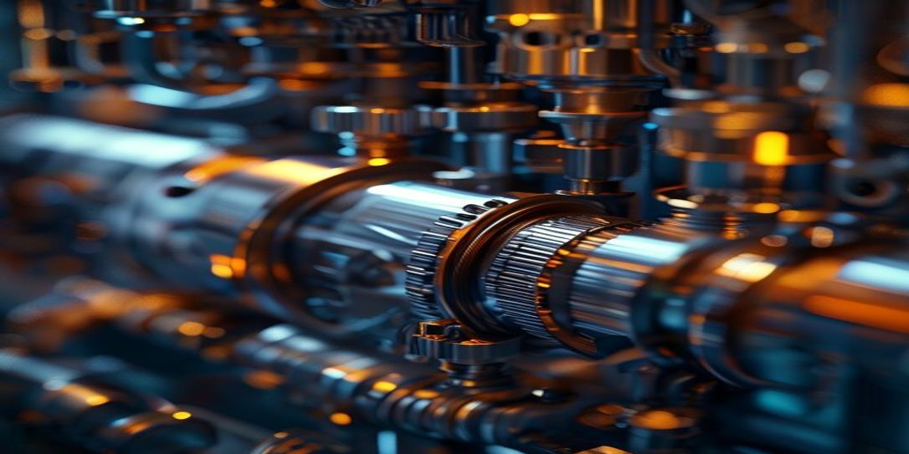

Operational Analysis:
Cryogenic Pump Engineering
As a Senior Data Engineering Director, it is imperative to scrutinize the niche of Cryogenic Pump Engineering with utmost diligence, given the intricate complexities and high-stakes applications involved. A thorough examination of this sector reveals a plethora of hidden liabilities that can potentially cripple the entire operation, if left unaddressed. The primary concern revolves around the lack...
of standardized design principles and testing protocols, which can lead to inconsistent performance and unforeseen failures in the cryogenic pumps. Moreover, the dearth of reliable telemetry systems to monitor the pump's performance in real-time further exacerbates the problem, making it challenging to identify potential issues before they escalate into full-blown crises. It is essential to develop and implement robust telemetry solutions that can provide precise and actionable insights, enabling data-driven decision-making to mitigate these hidden liabilities.
The prevalence of invisible ROI failures is another critical aspect that warrants attention in Cryogenic Pump Engineering. The high development costs, coupled with the necessity for specialized materials and expertise, can result in significant investments that may not yield the expected returns. The lack of transparency in cost-benefit analysis and the failure to account for potential risks and uncertainties can lead to a distorted understanding of the true ROI. To counter this, it is vital to establish a comprehensive framework for cost-benefit analysis, incorporating both tangible and intangible factors, as well as implementing a robust risk management strategy that can identify and mitigate potential threats to the project's financial viability. Furthermore, the integration of advanced data analytics and machine learning algorithms can help optimize pump performance, reduce energy consumption, and enhance overall efficiency, thereby improving the ROI and ensuring the long-term sustainability of the project.
The importance of precision in Cryogenic Pump Engineering cannot be overstated, as even minor deviations from optimal performance can have catastrophic consequences. The pumps are designed to operate in extremely low-temperature environments, where the slightest variation in pressure, flow rate, or temperature can lead to equipment failure or compromised product quality. To achieve the required level of precision, it is essential to invest in cutting-edge technologies, such as advanced sensors, high-resolution telemetry systems, and sophisticated control algorithms. Moreover, the development of standardized testing protocols and rigorous quality control measures can help ensure that the pumps are manufactured and operated within tightly defined tolerances, minimizing the risk of errors or inconsistencies. The establishment of a culture of precision, where every aspect of the design, development, and operation is meticulously scrutinized and optimized, is crucial for achieving excellence in Cryogenic Pump Engineering.
A thorough operational analysis of the Cryogenic Pump Engineering niche highlights the need for a multifaceted approach that encompasses not only technical excellence but also strategic planning and risk management. The development of advanced telemetry systems, precision engineering, and data-driven decision-making frameworks is crucial for mitigating hidden liabilities, identifying invisible ROI failures, and optimizing pump performance. Moreover, the establishment of robust quality control measures, standardized testing protocols, and rigorous risk management strategies can help ensure the long-term viability and sustainability of the project. As a Senior Data Engineering Director, it is imperative to prioritize these aspects and foster a culture of precision, innovation, and continuous improvement, where every stakeholder is empowered to contribute to the development of cutting-edge cryogenic pump technologies that meet the most demanding requirements of this niche.
The prevalence of invisible ROI failures is another critical aspect that warrants attention in Cryogenic Pump Engineering. The high development costs, coupled with the necessity for specialized materials and expertise, can result in significant investments that may not yield the expected returns. The lack of transparency in cost-benefit analysis and the failure to account for potential risks and uncertainties can lead to a distorted understanding of the true ROI. To counter this, it is vital to establish a comprehensive framework for cost-benefit analysis, incorporating both tangible and intangible factors, as well as implementing a robust risk management strategy that can identify and mitigate potential threats to the project's financial viability. Furthermore, the integration of advanced data analytics and machine learning algorithms can help optimize pump performance, reduce energy consumption, and enhance overall efficiency, thereby improving the ROI and ensuring the long-term sustainability of the project.
The importance of precision in Cryogenic Pump Engineering cannot be overstated, as even minor deviations from optimal performance can have catastrophic consequences. The pumps are designed to operate in extremely low-temperature environments, where the slightest variation in pressure, flow rate, or temperature can lead to equipment failure or compromised product quality. To achieve the required level of precision, it is essential to invest in cutting-edge technologies, such as advanced sensors, high-resolution telemetry systems, and sophisticated control algorithms. Moreover, the development of standardized testing protocols and rigorous quality control measures can help ensure that the pumps are manufactured and operated within tightly defined tolerances, minimizing the risk of errors or inconsistencies. The establishment of a culture of precision, where every aspect of the design, development, and operation is meticulously scrutinized and optimized, is crucial for achieving excellence in Cryogenic Pump Engineering.
A thorough operational analysis of the Cryogenic Pump Engineering niche highlights the need for a multifaceted approach that encompasses not only technical excellence but also strategic planning and risk management. The development of advanced telemetry systems, precision engineering, and data-driven decision-making frameworks is crucial for mitigating hidden liabilities, identifying invisible ROI failures, and optimizing pump performance. Moreover, the establishment of robust quality control measures, standardized testing protocols, and rigorous risk management strategies can help ensure the long-term viability and sustainability of the project. As a Senior Data Engineering Director, it is imperative to prioritize these aspects and foster a culture of precision, innovation, and continuous improvement, where every stakeholder is empowered to contribute to the development of cutting-edge cryogenic pump technologies that meet the most demanding requirements of this niche.
RESTRICTED ACCESS
AD SPACE
AdSense